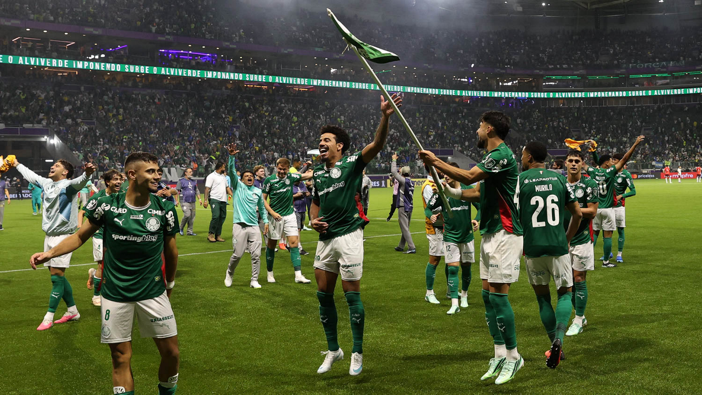

O Palmeiras garantiu uma vaga na final da Copa Libertadores de 2026 após uma semifinal dramática contra o Fluminense. Na noite desta quarta-feira, 21 de outubro, no Nubank Parque, em São Paulo, a equipe comandada por Abel Ferreira foi derrotada no tempo regulamentar, mas venceu a disputa de pênaltis e confirmou a classificação para a decisão continental.
O confronto reuniu dois clubes acostumados a disputar grandes competições e terminou decidido nos detalhes. Depois de vencer o primeiro jogo por 2 a 1, no Maracanã, o Palmeiras entrou em campo com vantagem no placar agregado. O Fluminense, porém, resistiu, encontrou o gol na reta final e levou a definição da vaga para as penalidades.
O grande protagonista da classificação palmeirense foi o goleiro Carlos Miguel, que defendeu a cobrança de Nonato na quarta série. Marlon Freitas converteu o último pênalti do Verdão e encerrou a disputa, garantindo ao clube paulista mais uma participação na final do principal torneio de clubes da América do Sul.
Como foi o primeiro tempo
O Fluminense começou a partida procurando surpreender os donos da casa. Logo no primeiro minuto, Guilherme Arana apareceu dentro da área após uma combinação com Hulk e finalizou para defesa de Carlos Miguel.
Apesar da oportunidade inicial, o jogo rapidamente assumiu características de uma semifinal disputada com cautela. O Palmeiras procurava proteger a vantagem construída no Maracanã, enquanto o Fluminense tentava encontrar espaços sem oferecer contra-ataques ao adversário.
A equipe de Abel Ferreira adotou uma postura defensiva e buscou explorar principalmente as jogadas pelos lados. O Tricolor teve momentos de circulação da bola no campo ofensivo, mas encontrou dificuldades para transformar a posse em finalizações perigosas.
Uma das melhores oportunidades palmeirenses surgiu em um cruzamento de Piquerez para Giay, que tentou finalizar de primeira, mas não conseguiu acertar o alvo. O Fluminense também tentou avançar com Hulk e Savarino, embora sem conseguir estabelecer uma pressão constante.
O primeiro tempo ainda teve a saída de Millán, que precisou ser substituído por Ignácio após sentir um problema físico.
Com poucas chances claras, dificuldades na construção ofensiva e forte atenção aos espaços defensivos, os primeiros 45 minutos terminaram sem gols. O empate parcial favorecia o Palmeiras, que seguia classificado graças à vitória conquistada no Rio de Janeiro.
Hércules marca no segundo tempo e muda o rumo da semifinal
A segunda etapa manteve o equilíbrio e as dificuldades ofensivas apresentadas antes do intervalo. O Palmeiras passou a encontrar alguns espaços maiores, principalmente depois das alterações realizadas por Abel Ferreira, mas continuava enfrentando problemas na conclusão das jogadas.
Andreas Pereira apareceu em uma tentativa que terminou fora do gol. Ramón Sosa também levou perigo em uma finalização que acertou a rede pelo lado de fora.
Pelo Fluminense, Marcão procurou renovar o fôlego da equipe com mudanças no setor ofensivo. A entrada de Wesley Natã acabou sendo fundamental para o lance que alterou completamente o confronto.
Aos 36 minutos do segundo tempo, o jovem atacante participou de uma combinação com Hulk e encontrou Hércules na entrada da área. O volante finalizou de primeira, com precisão, no canto de Carlos Miguel, e marcou o único gol da partida.
O 1 a 0 colocou o Fluminense novamente na disputa pela vaga. Como o Palmeiras havia vencido por 2 a 1 no jogo de ida, o placar agregado ficou empatado em 2 a 2.
Nos minutos restantes, o Palmeiras tentou reagir para evitar os pênaltis. Sosa teve uma oportunidade, mas parou em Fábio. O Fluminense também procurou aproveitar os espaços que surgiam, sem conseguir ampliar o resultado.
O apito final confirmou a vitória tricolor no tempo regulamentar, mas deixou a classificação indefinida. A semifinal seria resolvida nas cobranças de pênalti.
Carlos Miguel decide nos pênaltis
A disputa das penalidades foi marcada pela eficiência dos cobradores palmeirenses e pela atuação decisiva de Carlos Miguel.
Maurício abriu a série com uma cobrança convertida para o Palmeiras. Thiago Silva respondeu pelo Fluminense e deixou tudo igual.
Na segunda rodada, Gustavo Gómez marcou para o Verdão, enquanto Hércules, autor do gol no tempo normal, também converteu sua cobrança.
Ramón Sosa acertou o terceiro pênalti palmeirense, e Guilherme Arana manteve o Fluminense vivo ao marcar para a equipe carioca.
A quarta série mudou o destino da classificação. Piquerez converteu sua cobrança e colocou o Palmeiras novamente em vantagem. Na sequência, Nonato bateu para o Fluminense, mas Carlos Miguel fez a defesa.
Com a possibilidade de encerrar a disputa, Marlon Freitas assumiu a quinta cobrança do Palmeiras e marcou, garantindo o triunfo por 5 a 3.
O resultado deu ao Palmeiras uma classificação construída pela eficiência nas penalidades, mesmo depois de uma atuação ofensiva limitada durante os 90 minutos.
Veja os melhores momentos da partida abaixo:
Palmeiras aumenta sua história na Liberadores
A classificação diante do Fluminense colocou o clube paulista na oitava final da Copa Libertadores.
Com Abel Ferreira, a equipe alcançou sua quarta final do torneio. O treinador português já havia comandado o clube nas campanhas dos títulos de 2020 e 2021 e na decisão de 2025.
A classificação também reforça o peso do Palmeiras na história da competição. Tricampeão continental, o clube conquistou a América em 1999, 2020 e 2021, campanhas que marcaram diferentes gerações e consolidaram o Verdão entre os protagonistas do futebol sul-americano. A trajetória dessas conquistas, com os jogos decisivos, gols, craques e finais históricas, está detalhada na matéria sobre os três títulos do Palmeiras na Libertadores. A classificação diante do Fluminense representa mais uma oportunidade de ampliar esse legado e buscar o tetracampeonato.
A final da edição de 2026 foi marcada para 28 de novembro, no Estádio Centenário, em Montevidéu, no Uruguai. O adversário do Palmeiras seria definido no outro confronto semifinal, entre Flamengo e Estudiantes.
Para o Fluminense, campeão da América em 2023, a eliminação interrompeu a tentativa de conquistar seu segundo título continental.
A semifinal de 2026 terminou como um confronto de dois jogos com roteiros diferentes. O Palmeiras construiu a vantagem no Maracanã, o Fluminense conseguiu devolver a diferença em São Paulo e os pênaltis colocaram Carlos Miguel no centro da história.
Mais do que uma classificação, o duelo mostrou uma das características que tornam a Libertadores tão marcante: nem sempre vencer a última partida é suficiente para seguir adiante. Em um mata-mata decidido nos detalhes, o Palmeiras encontrou nas mãos de seu goleiro o caminho para mais uma final continental.